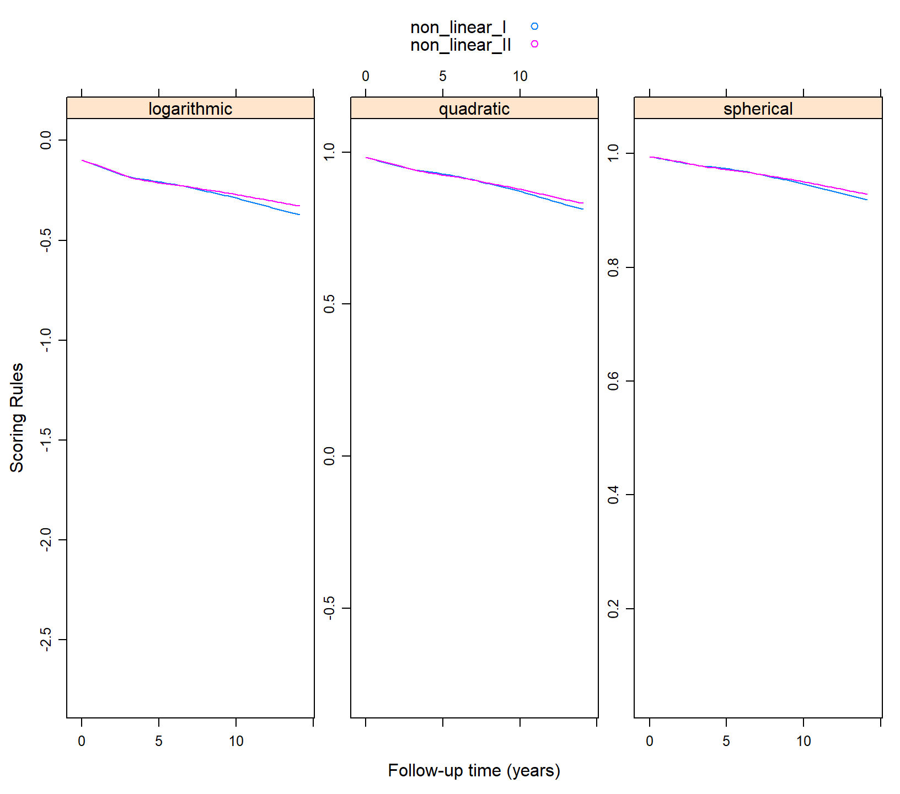
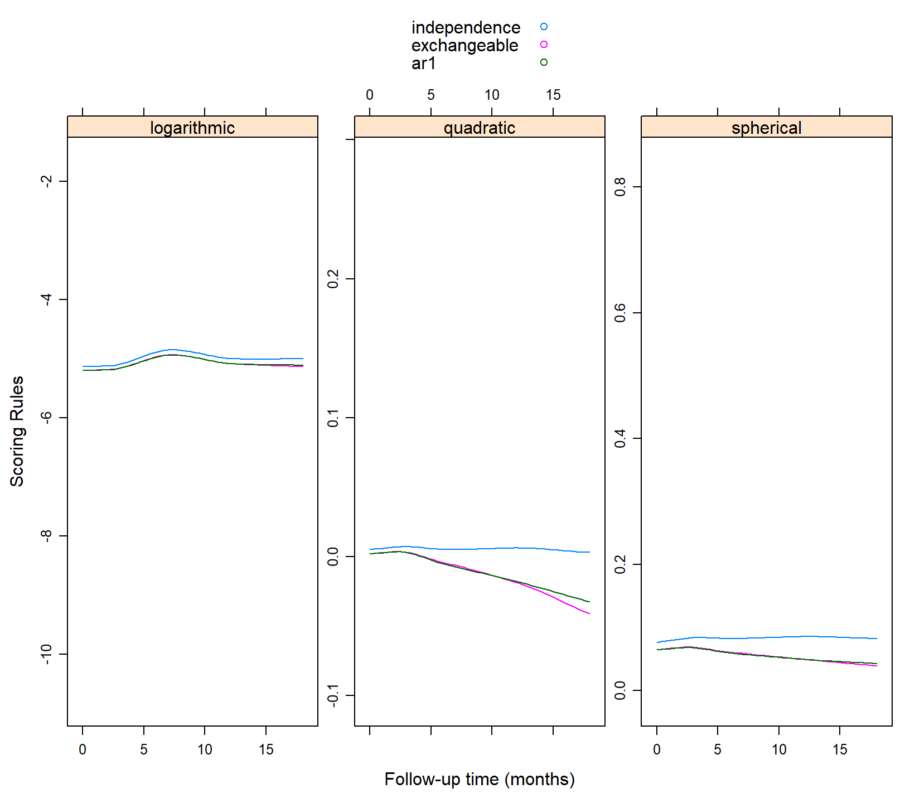

vignettes/Scoring_Rules_GEE.Rmd
Scoring_Rules_GEE.RmdWe present here a short introduction into proper scoring rules. Let \(Y_{ij}\) denote a categorical outcome taking values in the set \(\{0, 1, \ldots, K\}\) for sample unit \(i\) in cluster/group \(j\); \(K\) can be finite (e.g., number of Bernoulli experiments) or infinite (count data). We let also \(\pi_{ijk} = \Pr(Y_{ij} = k)\), \(k = 1, \ldots, K\). A scoring rule \(R(\pi_{ij}, \{Y_{ij} = k\})\) is a function that assigns a score for the forecast \(\{\pi_{ijk}; k = 1, \ldots, K\}\) upon observing the outcome \(\{Y_{ij} = k\}\). That is, based on observing \(Y_{ij}\), we get probabilities for all \(K\) categories. A proper scoring rule is rule that is maximized when the true probabilities are used in its calculation. The best-known proper scoring rules, together with their score ranges are: \[\begin{array}{rl} \mbox{logarithmic:} & R(\pi_{ij}, \{Y_{ij} = k\}) = \log(\pi_{ijk}), \quad (-\infty, 0],\\\\ \mbox{quadratic:} & R(\pi_{ij}, \{Y_{ij} = k\}) = 2\pi_{ijk} - \sum_{\ell = 1}^K \pi_{ij\ell}^2, \quad [-1, 1],\\\\ \mbox{spherical:} & R(\pi_{ij}, \{Y_{ij} = k\}) = \pi_{ijk} \Bigg / \sqrt{\sum_{\ell = 1}^K \pi_{ij\ell}^2}, \quad [0, 1].\\ \end{array}\] The quadratic and spherical scoring rules often result in extreme ranking differences when compared to the logarithmic scoring rule. Furthermore, due to being non-local, the quadratic and spherical scoring rules allow for the possibility of one model receiving the highest score when assigning a probability to the observed outcome lower than the probabilities assigned by other models.
However, in generalized estimating equations we make no specification of the distribution of the data apart from the first two moments. Therefore, we do not get a probability mass function to obtain \(\{\pi_{ijk}; k = 1, \ldots, K\}\). Hence, in the calculation behind cvGEE the following conventions are made.
For dichotomous data (\(K = 1\)) we use the Bernoulli distribution in the calculation of the scoring rules.
For binomial data and to account for over-dispersion we use the Beta-Binomial distribution. From the quasi-likelihood behind the GEE the variance of \(Y_{ijk}\) is \(\mbox{var}(Y_{ijk}) = \phi K \pi_{ijk} (1 - \pi_{ijk})\), where \(\phi\) is the over-dispersion parameter. The scale parameter \(\theta\) of the Beta-Binomial distribution is set equal to \((K - \phi) / (\phi - 1)\), such that the variance of Beta-Binomial matches the variance behind the quasi-likelihood.
For count data and to account for over-dispersion we use the negative binomial distribution. From the quasi-likelihood behind the GEE the variance of \(Y_{ij}\) is \(\mbox{var}(Y_{ij}) = \phi \mu_{ij}\), where \(\phi\) is the over-dispersion parameter and \(\mu_{ij} = E(Y_{ij})\). The shape parameter \(\theta\) of the negative-binomial distribution is set equal to \(\mu_{ij} / (\phi - 1)\), such that the variance of negative-binomial matches the variance behind the quasi-likelihood.
For our first example we consider a dichotomized version of the serum cholesterol biomarker from the PBC dataset, taking as cut-off the value of 210 mg/dL. This a longitudinal dataset in which we have repeated measurements of serum cholesterol during follow-up for the patients randomized in the trial. The id variable identifies measurements taken on the same patient. We would like to investigate the placing of the knots in a natural cubic spline for the follow-up times for the log-odds of high serum cholesterol levels. In the first GEE we place two knots at the median and third quantile (the first quantile is equal to the boundary knot at zero). In the second GEE we place the knots at two, five and seven years of follow-up. The working correlation matrix is assumed to be the exchangeable one. We solve the two GEEs using the following calls to geeglm() from package geepack:
pbc2$serCholD <- as.numeric(pbc2$serChol > 210)
gm1 <- geeglm(serCholD ~ ns(year, knots = c(3, 6), Boundary.knots = c(0, 10)) * drug,
family = binomial(), data = pbc2, id = id,
corstr = "exchangeable")
gm2 <- geeglm(serCholD ~ ns(year, knots = c(2, 5, 7), Boundary.knots = c(0, 10)) * drug,
family = binomial(), data = pbc2, id = id,
corstr = "exchangeable")These GEEs are not nested and therefore we cannot compare them with a Wald test. Hence, we will use the proper scoring rules to investigate if there are differences between the splines. We calculate all scoring rules for each observation using the following calls to cv_gee():
plot_data <- cv_gee(gm1, return_data = TRUE)
plot_data$non_linear_I <- plot_data$.score
plot_data$non_linear_II <- unlist(cv_gee(gm2))In the first call for model gm1 we specified that we want to return the calculated values for the scoring rules in the original dataset used to solve the GEE (excluding any missing values in the outcome or covariates). The column that is created by cv_gee() and contains the values of the scoring rules is called .score. In the second line we make a copy of this column with the name non_linear_I that will be used in the plotting next. The third line calculates the scoring rules for the second GEE. In this one we have asked for the dataset, but rather only for the values of the scoring rules that are put in the column non_linear_II of the plot_data.
Next, to see if there are differences in predictive performance between the two GEEs we plot the three scoring rules for the two GEEs using the following call to xyplot() from package lattice:
xyplot(non_linear_I + non_linear_II ~ year | .rule, data = plot_data,
type = "smooth", auto.key = TRUE, layout = c(3, 1),
scales = list(y = list(relation = "free")),
xlab = "Follow-up time (years)", ylab = "Scoring Rules")
We can make the following two observations. First, there are no differences between the two splines with regard to predictive ability. Second, that the predictive ability of both GEEs decreases over time.
For our second example we aim to use the proper scoring rules for selecting the working correlation matrix for the AIDS dataset. This is again a longitudinal study on patients with advanced HIV infection. The outcome of interest is the CD4 cell count. Because of the CD4 cell counts can be high, often this outcome is analyzed with a linear mixed model after a square root transformation. Here we respect the nature of the outcome, and analyze it as a count. In the aids data frame the CD4 variable is the already square root transformed CD4 cell counts. Hence, as a first step we transform it to the original scale. For the mean structure we only include the follow-up time as a categorical variable. For the working correlation we solve the GEEs assuming the independence, exchangeable and AR1 structures (the data are already ordered with respect to follow-up time).
aids$CD4count <- aids$CD4 * aids$CD4
aids$obstimef <- factor(aids$obstime)
fm1 <- geeglm(CD4count ~ obstimef, family = poisson(), data = aids,
id = patient, corstr = "independence")
fm2 <- update(fm1, corstr = "exchangeable")
fm3 <- update(fm1, corstr = "ar1")Using a similar syntax as in the previous example we create the plot_data dataset with the estimated values for the three scoring rules under the different working correlation structures. We set an upper bound in the maximum count to 1000 cells/\(\mu \mbox{l}\), which is in the middle of the normal range for this biomarker in healthy individuals. In our sample, the maximum was 582 cells/\(\mu \mbox{l}\).
plot_data <- cv_gee(fm1, return_data = TRUE, max_count = 1000)
plot_data$independence <- plot_data$.score
plot_data$exchangeable <- unlist(cv_gee(fm2, max_count = 1000))
plot_data$ar1 <- unlist(cv_gee(fm3, max_count = 1000))And using a similar call to xyplot() we produce the plot of these values over the follow-up time:
xyplot(independence + exchangeable + ar1 ~ obstime | .rule,
data = plot_data, type = "smooth", auto.key = TRUE, layout = c(3, 1),
scales = list(y = list(relation = "free")),
xlab = "Follow-up time (months)", ylab = "Scoring Rules")
We observe that the independence working correlation matrix seems to produce the better predictions compared to the other two. Also we observe that the predictive performance of the three structures remains relatively stable during follow-up.